Na sprzedaż Volkswagen Passat 1.4 TSI BMT ACT Highline DSG z 2018 roku. Samochód z dynamicznym i oszczędnym silnikiem benzynowym 1.4 TSI o mocy 150 KM oraz automatyczną skrzynią DSG z łopatkami przy kierownicy. Auto jest bardzo komfortowe, dobrze wyposażone i gotowe do jazdy bez dodatkowych nakładów finansowych.
Przebieg pojazdu wynosi około 140 tys. km i jest oryginalny. Samochód posiada aktualne ubezpieczenie oraz przegląd techniczny ważny do marca 2027 roku. Do auta posiadam komplet dokumentów, książkę serwisową, instrukcje obsługi oraz dwa kluczyki.
Auto na dzień dzisiejszy nie wymaga żadnych inwestycji, napraw ani wymiany części. Jest zadbane, ekonomiczne i bardzo przyjemne w codziennym użytkowaniu. Średnie spalanie wynosi około 5,7 l/100 km, co przy automatycznej skrzyni biegów i komforcie klasy średniej jest dużym atutem.
Najważniejsze dane
· Marka i model: Volkswagen Passat
· Wersja: 1.4 TSI BMT ACT Highline DSG
· Rok produkcji: 2018
· Data pierwszej rejestracji: 27.03.2018
· Silnik: benzyna, 1 395 cm³
· Moc: 150 KM
· Skrzynia biegów: automatyczna DSG
· Przebieg: ok. 140 000 km
· Kolor: grafitowy
· VIN: WVWZZZ3CZJE145960
· Przegląd techniczny: ważny do marca 2027 r.
Wyposażenie
· automatyczna skrzynia biegów DSG z łopatkami przy kierownicy
· Auto Hold
· fotele ergoComfort: podgrzewane, elektrycznie regulowane, z regulacją lędźwi i boczków
· tapicerka półskórzana z alcantarą
· reflektory LED Top z Dynamic Light Assist
· aktywne doświetlanie zakrętów
· oświetlenie ambiente wewnątrz pojazdu
· aktywny tempomat ACC
· czujniki parkowania z przodu i z tyłu
· duża nawigacja
· 3-strefowa klimatyzacja automatyczna
· Bluetooth, AUX i USB
· wielofunkcyjna skórzana kierownica
· składane i podgrzewane lusterka
· podgrzewana tylna szyba
· felgi aluminiowe 17 cali
· boczne poduszki powietrzne oraz kurtyny
· Isofix z tyłu
· składane tylne fotele i dzielona kanapa
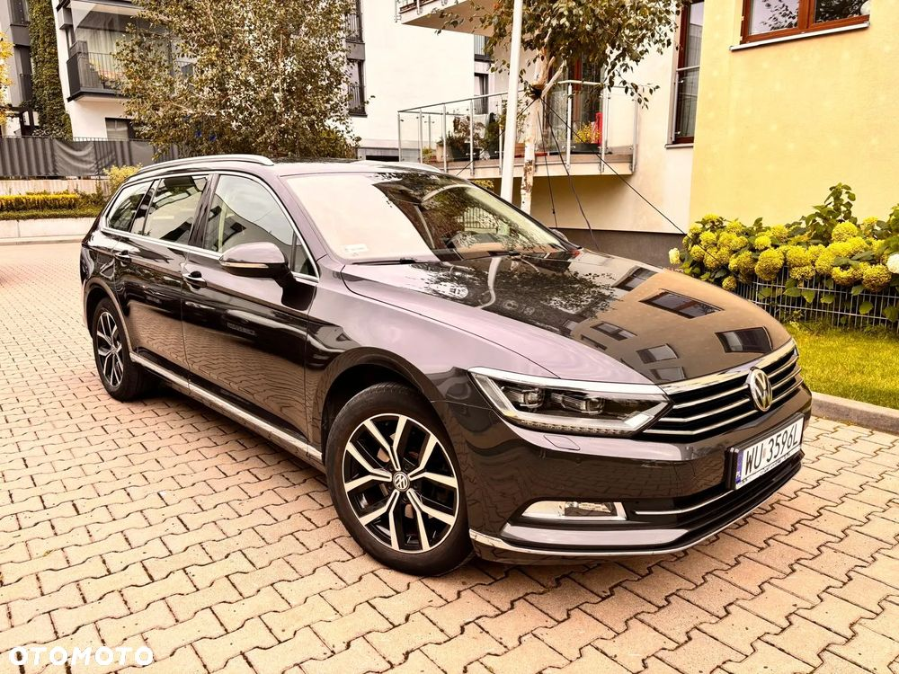

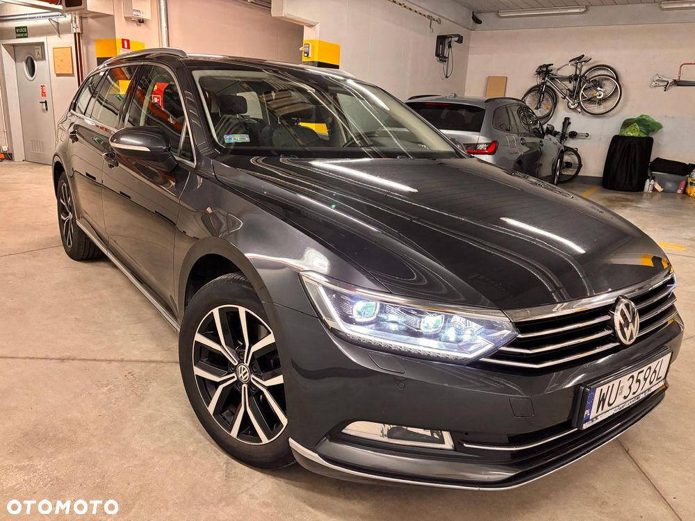
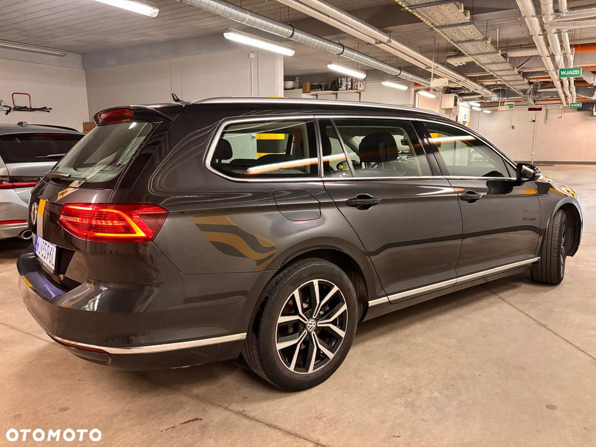
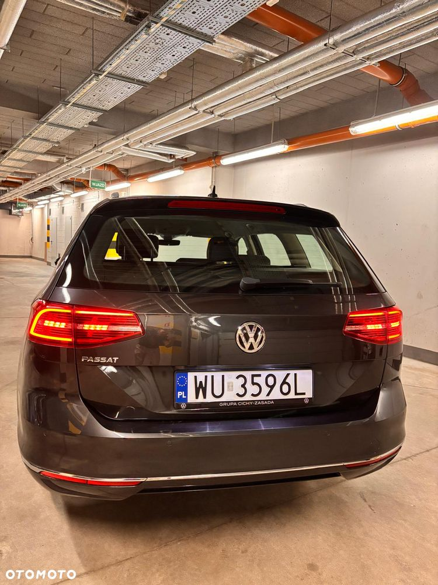
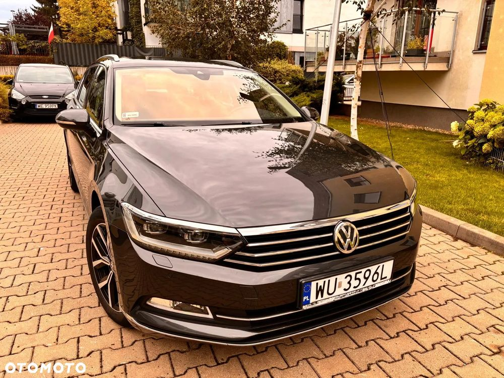
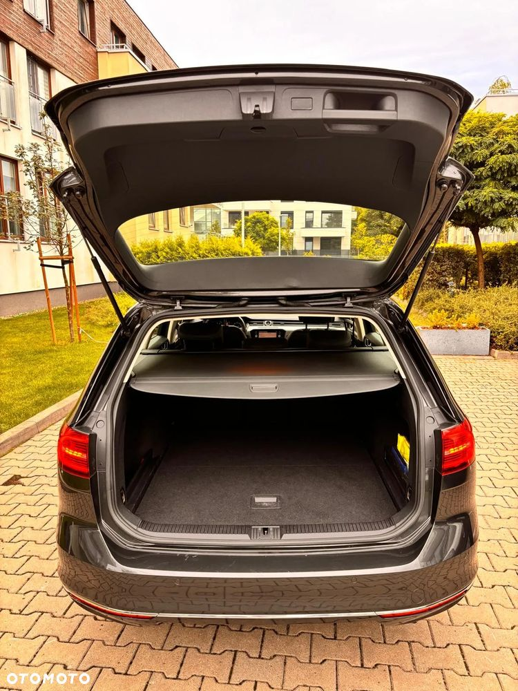
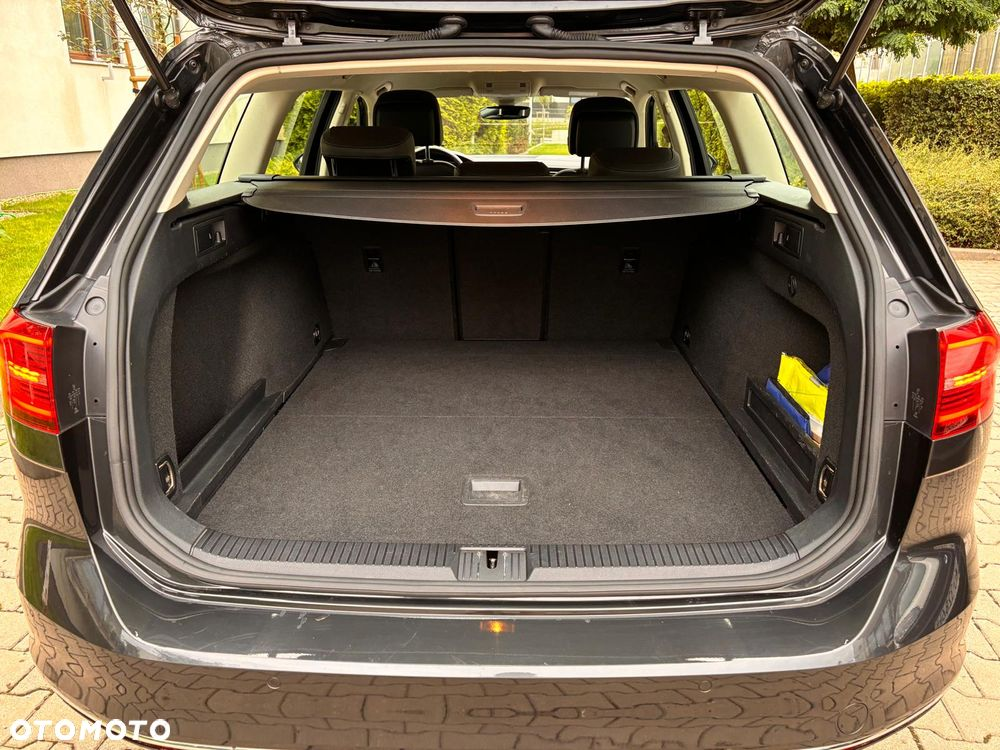
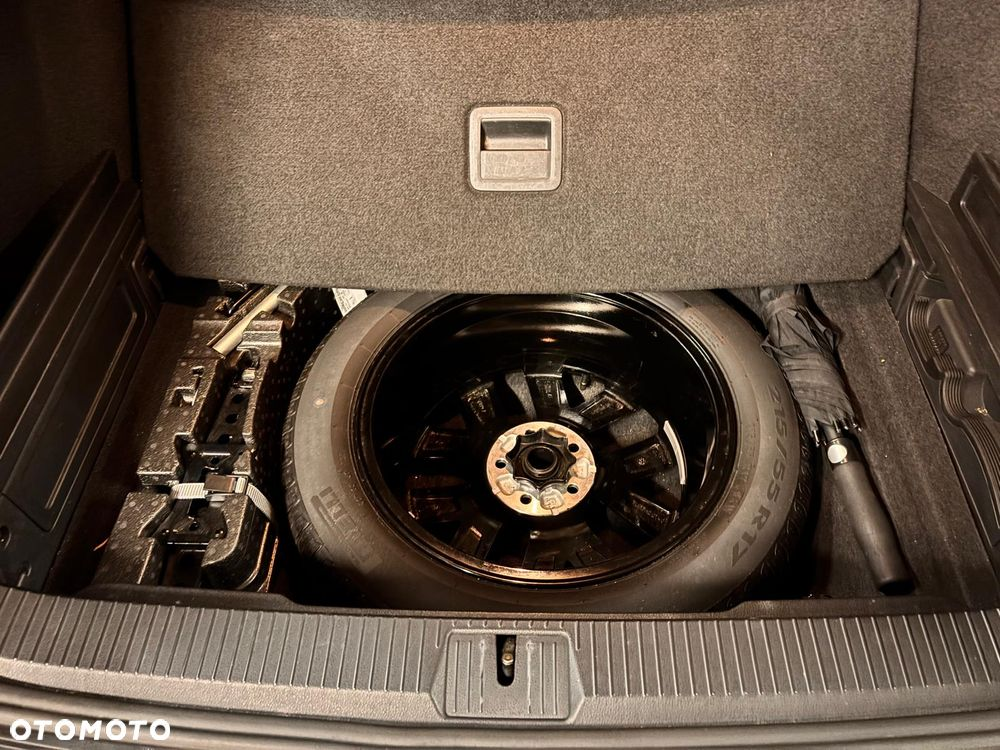
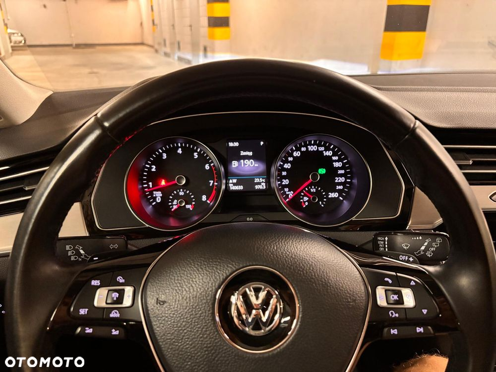
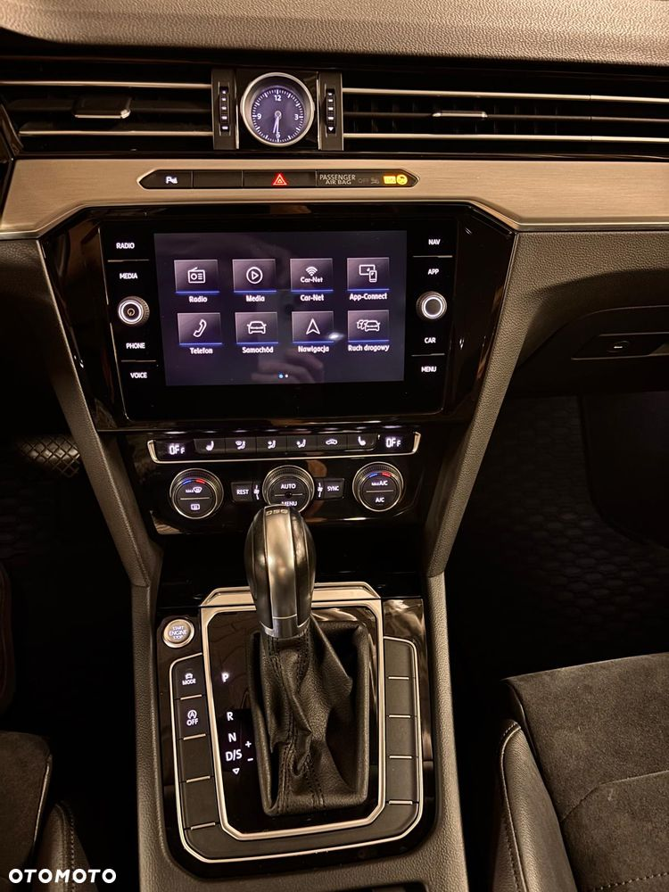
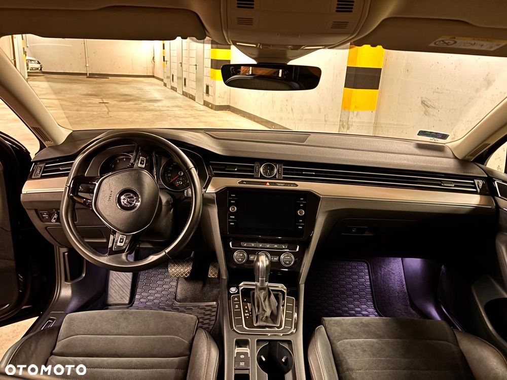
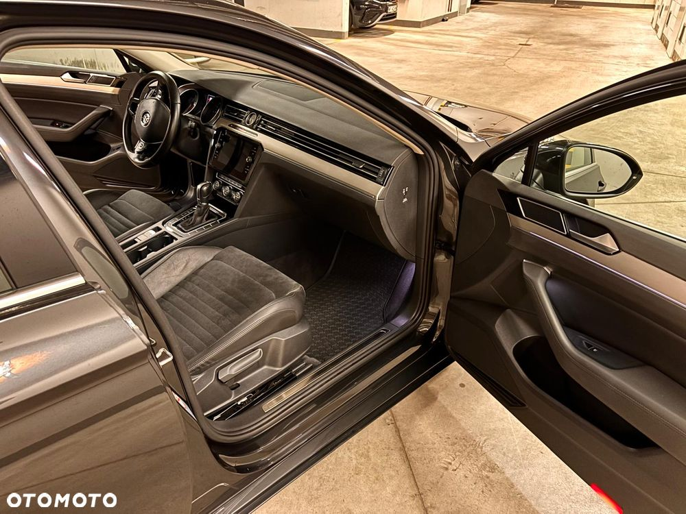
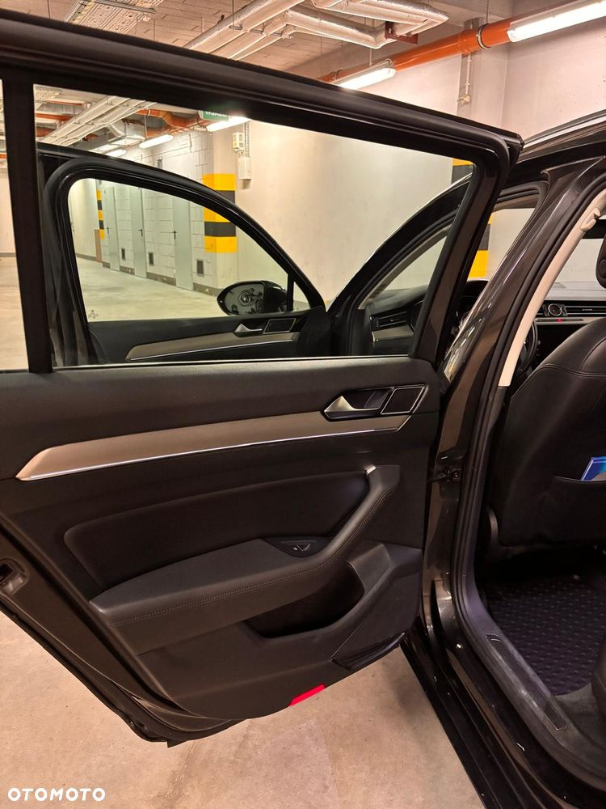
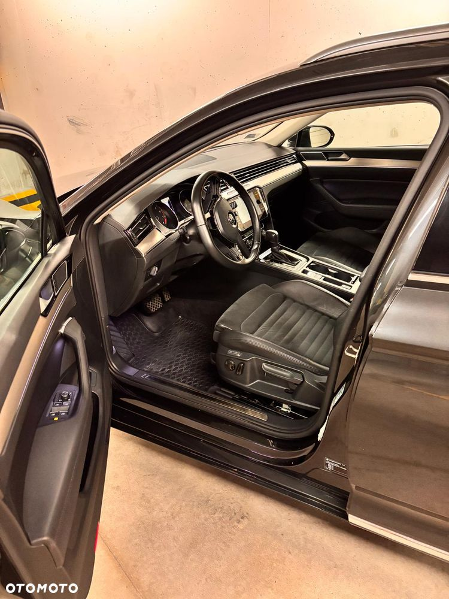